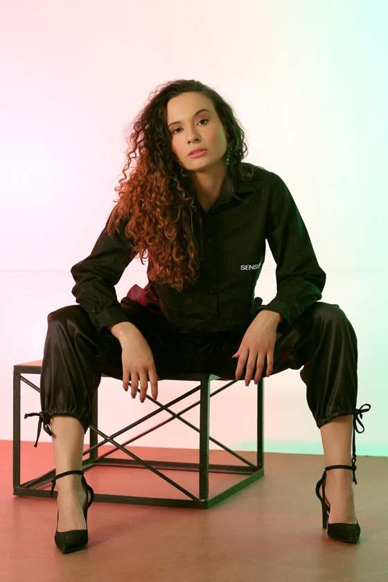
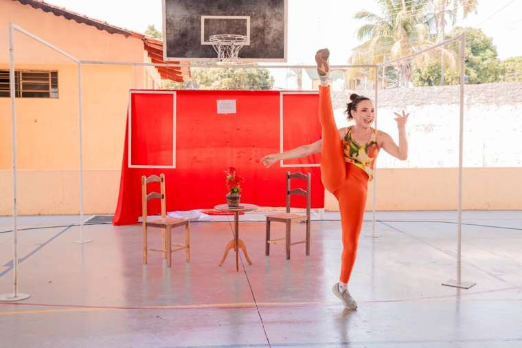
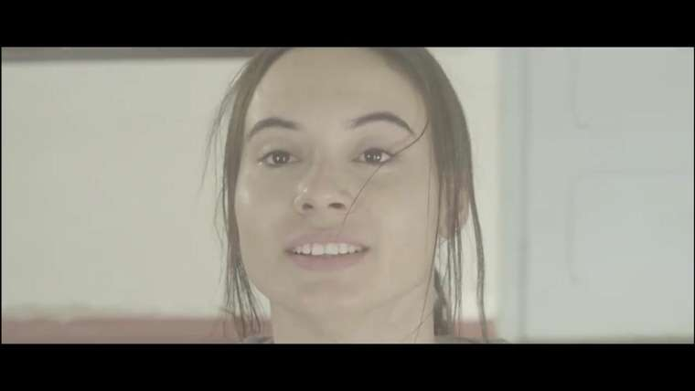

Abre o aplicativo, trava, posta no improviso ou deixa para amanhã.
Posicionamento digital para escolas de arte
Sua escola tem muito mais do que aparece no Instagram.
Você dá conta da escola inteira e ainda trava na hora de postar. O problema não é talento, é direção. A gente organiza isso até o seu perfil começar a trazer matrícula.
DançaTeatroMúsicaArtes visuaisEstúdiosCompanhias

1:1Direção individual em todos os formatos
6Etapas do Ciclo Bastidor-Palco
Antes, o perfil da escola já era bonito. Agora, é estratégico.Fleur Escola de Artes
3pilares de método
12meses de ciclo completo
O que trava quem já é bom
Entrega excelente por dentro. Comunicação improvisada por fora.
Você resolve turma, professor, pai, figurino, ensaio e matrícula. O Instagram fica para quando sobra tempo. E nunca sobra.
Mas essa pessoa não conhece a escola como você, e o perfil perde a alma.
Uma escola com metade da sua entrega lota a matrícula. Não ensina melhor. Comunica melhor.
O problema quase nunca é falta de talento. É falta de direção.
Termômetro da escola
Sua escola já está em cena?
Marque o que acontece hoje. Leva 30 segundos e o resultado vai junto na sua mensagem para a Andreza.
Em cenaNos bastidores
Marque as frases ao lado
Conforme você marca, o termômetro mostra o quanto a sua escola está escondida nos bastidores.
Enviar meu resultado para a AndrezaO método
Três pilares, na ordem em que a coisa funciona.
Primeiro entender qual palco você quer ocupar. Depois transformar isso em comunicação. Por fim, sustentar com gestão. Pular etapa é o que faz o conteúdo virar ruído.
01
Identidade em Cena
Quem somos, aonde queremos chegar e o que precisa entrar em cena?
Mergulho na história e no contexto da escola: essência, valores, repertório, diferenciais, público, percepção desejada, concorrentes, objetivos e metas.
DiagnósticoPosicionamentoPlano estratégico
Mecanismo único
O Ciclo Bastidor-Palco
Organiza a potência que existe por trás da escola para colocá-la em cena com estratégia, consistência e direção. Ele roda dentro dos três pilares e recomeça a cada temporada. Toque em cada etapa.
Identidade em CenaMergulho
Etapa 1 de 6 · Identidade em Cena
Mergulho
Pesquisar e entender a fundo a escola: história, rotina, equipe, alunos e o que faz ela ser única.

Em cena: Segurança é VidaQuem conduz
Prazer, eu sou a Andreza.
Atriz, artista e estrategista. Venho do universo das artes. Convivi com professores excelentes, escolas cheias de vida e artistas com entrega real, e vi muitos deles sumirem no digital por falta de direção, não de talento.
Conheço a rotina de quem dirige uma escola artística: a dificuldade de sair do operacional para pensar na marca e a frustração de saber que o trabalho vale mais do que a comunicação mostra. Foi para esse cenário que criei o Método Palco Digital.
Não existe fórmula. Existe leitura, estratégia e acompanhamento real. Eu entrego direção. A captação e a publicação continuam com a sua equipe.
1:1Atenção individual em todos os formatos
3Pilares que estruturam o método
6Etapas do Ciclo Bastidor-Palco
Portfólio artístico
Quem dirige o seu palco digital vive o palco de verdade.
Atriz de teatro e audiovisual, com trajetória entre Goiânia, Rio de Janeiro e São Paulo. É dessa vivência de cena que nasce a direção que ela leva para cada escola.
Desde 2006Em formação e em cena no teatro
DRTAtriz com registro profissional
Rede GloboParticipação na novela Rock Story
3 linguagensTeatro, teatro musical e audiovisual

Demo reelAndreza Moura, atrizToque para assistirExperiência artística
- 2023 a 2026Segurança é VidaMonólogo · direção Samuel Baldani · Projeto TJC, Associação Nacional dos Magistrados da Justiça do Trabalho
- 2025Carta AbertaTeatro musical · personagens Edinalva e Dona Dora · direção Jeane Valadares · Mvsika! Centro de Estudos
- 2022EcoCurta-metragem · personagem Marisa · direção Elisa Lobo Jayme
- 2020DançarinasCurta-metragem · personagem Rafaela · direção Paulo Morais e Pedro Hagaffer
- 2017 a 2018Separei. E Agora?Teatro · direção Robson Lima e Marcelo Duque · Rio de Janeiro
- 2017Rock StoryNovela · participação · Rede Globo
- 2015 a 2016MC Favorito: Perigos OnlineTeatro · personagem Gabi · Cia Bento Vasconcelos · GO, TO e SE
Formação
AudiovisualVictor Ferrade, Ricardo Conti e Wolf Maya (RJ) · Oficina de cinema com Odécio Antônio no Martim Cererê
TeatroOficinas com Robson Lima, Samuel Baldani, Eduardo de Souza e Marcos Honda (Goiânia e Inhumas)
Teatro musicalMaster classes com David Zellnik e Andréia Vitfer
Ballet clássicoJazzContemporâneoSapateadoTécnica vocal
Por onde começa
Antes de contratar qualquer coisa, a gente precisa enxergar a sua escola.
O Diagnóstico é o primeiro passo de todo mundo. Depois dele, você escolhe a trilha que acompanha o ritmo da sua escola.
R$ 350,00
Um encontro feito de perguntas estratégicas para mostrar onde está o buraco entre o que a escola entrega e o que o digital comunica. Você não precisa saber de marketing. Só precisa conhecer a sua escola.
- 1 encontro de 1h a 1h30, ao vivo
- Perguntas sobre marca, público e comunicação
- Plano de ação enviado depois do encontro
- Serve para escola, estúdio, companhia ou artista
Consultoria AnualRecomendada
12 meses, encontros mensaisUma escola de arte vive um ciclo de um ano: matrícula, Dia das Mães, espetáculo, férias e retorno. Em seis meses você vive metade dele. O ano completo é o que fecha o ciclo.
Falar sobre a AnualQuem já entrou em cena
O que mudou para quem passou pelo método
"Antes, o perfil da escola já era bonito. Agora, é estratégico: tem identidade, posicionamento e conteúdo alinhados à essência da escola."
Fleur Escola de ArtesEscola de artes
"Se sentir dona do posicionamento da sua escola é outro nível."
AngélicaDiretora e professora de escola de dança
"Foi bom demais viver essa mentoria com você. Cada conversa abriu espaço pra eu mostrar meu trabalho com mais clareza e intenção."
MentoradoPalco Digital
"Muito obrigado pelo suporte. Arrasou em tudo. Te indiquei mais uma pessoa para a Mentoria."
FilipeMentorado
Reserve seu Diagnóstico
Conta um pouco da sua escola e a gente começa daí.
Preencha em 1 minuto. Sua mensagem chega pronta no WhatsApp da Andreza, é só tocar em enviar.
Também atendo
Você é artista, não escola?
O mesmo método atende marca pessoal de cantores, bailarinos, músicos, atores e coreógrafos. Artista não é influenciador: não se mostra rotina comum, se constrói universo. O bastidor é curado e a presença preserva a aura em vez de gastá-la.
3 meses6 encontros quinzenais3 pilares
Suas dúvidas
Respondendo o que você já está pensando
Preciso fazer o Diagnóstico antes de contratar uma trilha?
Sim. Ele é o primeiro passo de qualquer trilha. É nele que eu enxergo a sua escola e indico o caminho certo para o seu momento.
Você faz os meus posts?
Não. Eu entrego a direção: cronograma, roteiros e legendas. A sua equipe capta e publica, e a conta continua sempre sua.
Sou artista e não tenho escola. Serve para mim?
Serve. Para artistas existe a trilha Palco Solo, com três meses e seis encontros quinzenais.
Já tenho social media. Ainda preciso disso?
Social media executa. Eu dou a direção que ela vai executar: posicionamento, narrativa e o que comunicar em cada época do ano. As duas coisas se completam.
Preciso ter experiência com marketing digital?
Não. Você só precisa conhecer a sua escola. O resto a gente constrói junto.
Como funciona o pagamento das trilhas?
As condições são combinadas depois do Diagnóstico, de acordo com a trilha escolhida. Chama no WhatsApp que eu te explico.
Em quanto tempo eu vejo resultado?
A clareza vem já no Diagnóstico. Procura e matrícula crescem ao longo dos meses, conforme a escola entra em cena com constância.
Próximo passo
O digital é um palco. A questão é como você entra nele.
Talento sem direção vira ruído. Presença com estratégia vira palco. Comece pelo Diagnóstico e descubra o que a sua escola está deixando de comunicar.